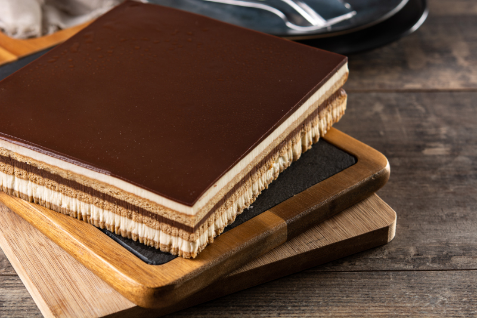

Opera Cake

Opera cake is made with thin
layers of almond-flour based ("joconde") sponge interleaved with
layers of buttercream frosting. It is often flavored with coffee
syrup and covered with a top layer of chocolate.
INGREDIENTS
- Chocolate ganache
- 300ml double cream
- 250g dark chocolate, 54%
- 25g unsalted butter, at room temperature, cubed
- Joconde sponge
- 225g ground almonds
- 225g caster sugar
- 5 large eggs
- 5 large egg whites
- 50g plain flour, sifted
- 35g unsalted butter, melted
- French buttercream
- 5 large egg yolks
- 160g caster sugar
- 50ml water
- 250g unsalted butter, softened
- 1½ tsp coffee extract
- Syrup
- 75ml water
- 75g caster sugar
- 1 tsp coffee essence
- To assemble
- Chocolate decorations
- 180g dark chocolate, 54%
- 5 x cocoa butter transfer strips 6cm x 20cm (Optional)
- Chocolage glaze
- 130ml double cream
- 25g caster sugar
- 20g liquid glucose
- 125g dark chocolate, 54%
DIRECTIONS
- For the chocolate ganache, pour the cream into a small pan and
bring to a simmer. Meanwhile tip the chocolate into a heatproof
bowl. Pour the cream over the chocolate and leave to stand for
2 minutes. Stir the cream and chocolate together until
emulsified, then stir in the butter to a smooth shiny ganache.
Set aside to thicken.
- Heat the oven to 210°C/190°C fan/410°F/Gas 7. Line two baking
sheets with non-stick baking paper and lightly spray with cake
release spray.
- For the joconde, whisk the ground almonds, 150g of the caster
sugar and the eggs together to ribbon stage.
- In a separate bowl, whisk the egg whites and the remaining 75g
of caster sugar together, to a stiff meringue.
- Gently fold the meringue mixture into the almond mixture. Sieve
the flour over the top of the mixture and gently fold in.
Finally, gently fold in the melted butter.
- Spread two thirds of the batter onto one of the lined baking
sheets and spread level with a palette knife. You will need to
cut two 23cm x 17cm rectangles from the sheet of sponge once
baked.
- Pour the remaining sponge batter over one half of the other
lined baking sheet and spread thinly and level with a palette
knife. You will need to cut one rectangle measuring 23cm x 17cm
from this sheet of sponge.
- Bake for 9-11 minutes until springy, but firm to the touch.
Remove from the oven and leave to cool on a wire rack.
- For the soaking syrup, place the water and sugar in pan and
bring to the boil. Reduce the heat, simmer for 2 minutes then
remove from the heat. Add the coffee essence then cool and
chill until cold.
- For the French buttercream, tip the eggs yolks into the bowl of
an electric food mixer and whisk until pale, thick and
creamy.
- Tip the sugar and water into a pan and boil to softball stage
(116°C/241°F). Remove from the heat and with the whisk still
running, very slowly pour the sugar syrup over the whisked egg
yolks. Continue whisking until the mixture is cool to
touch.
- Once the egg and sugar mixture is cold, whisk in the softened
butter, bit by bit until the mixture thickens.
- Whisk in the coffee extract and set aside.
- To assemble, line a baking sheet with an acetate sheet and
lightly grease and line the cake frame with acetate. Remove the
baking paper from the sponges and cut three 24cm x 17cm
rectangles from the sponges. Melt the chocolate and spread one
side of one sponge very thinly with chocolate. Place the
sponge, chocolate side down in the base of the lined cake tin
and brush the top lightly with coffee syrup.
- Spread half of the chocolate ganache over the sponge and level
with a palette knife. Freeze for 10 minutes until set.
- Spread half of the coffee buttercream over the ganache and
level with a palette knife, then top with a second sponge.
Brush with coffee syrup.
- Spread the remaining ganache over the sponge and freeze for 10
minutes, until set.
- Spread the remaining coffee buttercream over the chocolate
ganache and top with the remaining sponge. Brush with coffee
syrup. Chill in the fridge for 30 mins.
- For the chocolate decoration, temper the chocolate by melting
120g of chocolate in a bowl set over a pan of simmering water
to 45°C/113°F. Remove the bowl from the heat and add the
remaining 60g of chocolate. Stir until the chocolate cools to
28°C/82°F. Return the bowl of cooled chocolate to the pan and
stir until the temperature reaches 32°C/90°F.
- Lay the sheets of acetate (with the pattern facing upwards)
over the base of a damp baking sheet (the damp surface will
keep the acetate from moving around).
- Spread the chocolate over the acetate strips. Comb the
chocolate with the chocolate comb creating long strips. Curl
them into a loose spiral, like a pigtail, and place inside the
glasses until set.
- For the chocolate glaze, tip the cream, sugar and liquid
glucose into a clean pan and bring to a simmer. Meanwhile tip
the chocolate into a heatproof jug. Pour the warm cream over
the chocolate stirring continually to a smooth glaze.
- Remove the opera from the fridge and pour the glaze over the
top and spread evenly with a palette knife. Chill for 10
minutes, or until set.
- Demould the opera and place on the serving plate provided. Once
set, remove the chocolate twists from the acetate and arrange
on top of the opera cake.